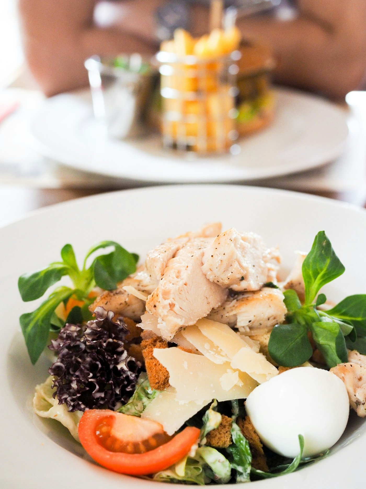

New in 1.6
Your Meta glasses photos count too.
Photos the Meta AI app saves to your library are checked for food on your iPhone before anything is sent.
Meta AI app
saves a photo from your glasses to your library.

Your library
Chopstats sees the new photo.
Food check
runs on your iPhone before anything is sent.
Food
Sent to your AI, which logs the meal
No food
Not sent
Settings › Photos

Needs Watch Camera Roll on. If the food check can’t run, the photo is sent like any other. Chopstats does not connect to the glasses.